FROM A BLANK PLAN TO A PLACE YOU CAN SEE
Your first home
in 3D.
Draw two rooms. Give them walls, a door, a window and a table. Then turn the plan around and see how it feels.
You can do this lesson entirely on this website. No download, Python, account or Home Assistant setup is needed. Open the planner and start drawing in your browser.
The planner opens in another tab so you can keep these instructions beside it. All screenshots show the fictional home made in this lesson. Click any picture to see it full size.
Three ideas to keep in mind
A room is a shape
Its colored area is the floor, like a shape cut from paper.
Walls are an outline
Add them after the rooms are arranged. They have thickness and stand up in 3D.
Height goes upward
The floor is zero. A tabletop, windowsill and ceiling sit at different heights above it.
The left panel holds tools and a list of objects. The middle is your drawing. The right panel shows the details of whatever you select.
STEP 01 · THE FIRST SHAPE
Draw the living room
We will make a living room 4 meters wide and 3 meters deep, with a smaller studio beside it. A meter is 100 centimeters; enter 0.9 for 90 centimeters.
- Open the planner and choose New project. If you already have a draft you want to keep, use Export JSON first. Start blank for this lesson; the built-in fictional demo is a different home.
- In the title field at the top, type My first home · practice and press Tab.
- In Floor settings on the right, set Floor name to Main floor, Elevation (m) to 0, and Ceiling height (m) to 2.7. Press Tab after each edit.
Make a rectangle with four numbers
For this lesson, use Add room by dimensions in Floor settings. This gives you exactly the shape in the pictures, so the next room will fit beside it. If you already drew a practice rectangle, use Undo first, then click your floor name to return to Floor settings. Enter these four values:
- Start x (m)
- 0
- Start z (m)
- 0
- Width (m)
- 4
- Depth (m)
- 3
Here, x runs left to right and z runs down the drawing. The two zeroes put the first corner at the grid's starting point. You do not need to calculate anything else for this lesson.
Click Add room. In the Room details that appear, change Room name to Living room and press Tab. Leave the wall outline for the next step.
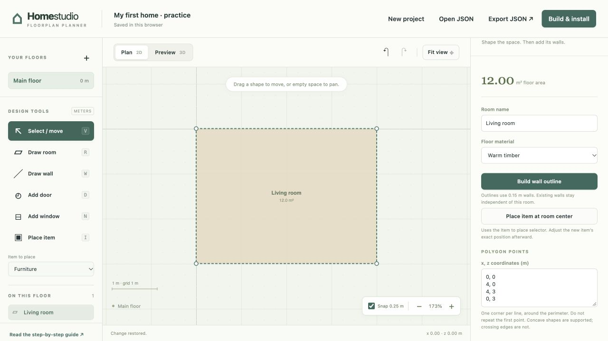
Check: one rectangle named Living room, with an area of 12.00 m². There are no standing walls yet.
How do I draw with the mouse instead?
On your next sketch, choose Draw room, press on the grid at one corner, drag diagonally to the opposite corner, and release. It feels like stretching a rectangle on paper. Keep Snap 0.25 m on to line up with quarter-meter steps. Use Select / move to move the shape afterward.
Continue this lesson with the measured rectangle above; a freehand rectangle may start elsewhere or have a different size, so the later numbers would not fit it.
STEP 02 · TWO ROOMS, ONE SHARED WALL
Add the studio, then the walls
- Click Main floor under Your floors to return to Floor settings.
- Under Add room by dimensions, enter the values below. Set Start x to 4 yourself; the suggested value leaves a gap.
- Start x (m)
- 4
- Start z (m)
- 0
- Width (m)
- 3
- Depth (m)
- 3
- Click Add room, rename it Studio, and press Tab. It should sit directly to the right of Living room.
- In the On this floor list on the left, select Living room. On the right, click Build wall outline.
- Select Studio in the same list, then click Build wall outline again.
The planner reuses the matching edge between the rooms. You get seven wall segments: four from the first room and three new ones from the second. The default walls are 0.15 meters thick.
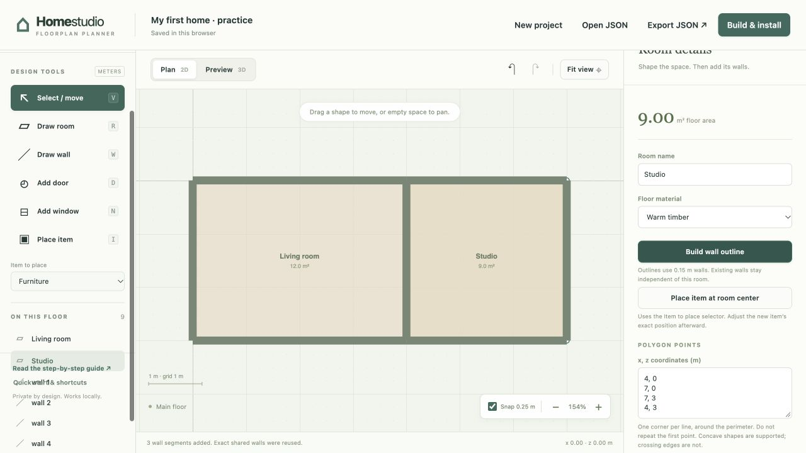
Check: Living room is 12 m², Studio is 9 m², and the list contains wall 1 through wall 7. Together the rooms make a 7-by-3-meter rectangle.
STEP 03 · A WAY THROUGH
Make a doorway between the rooms
A door opening belongs to a wall. Its width cuts across the wall; its height reaches up from the floor.
- Choose Select / move, then click the dividing wall. For the exact sequence above, you can also select wall 2 in On this floor.
- Check the right panel: the wall starts at x 4, z 0 and ends at x 4, z 3. This confirms you have the shared wall.
- Click Add door in the right panel. Opening details appear. Enter the values below, pressing Tab after each change.
- Width (m)
- 0.9
- Offset from wall start (m)
- 1
- Sill height (m)
- 0
- Head height (m)
- 2.1
Offset is the distance from the wall's start to the first edge of the opening, not its center. Here, the doorway begins 1 meter down from the top of the dividing wall. Sill means bottom edge and head means top edge, both measured above the floor.
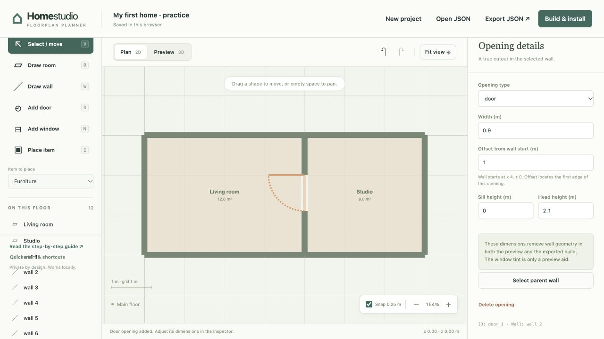
Check: one doorway appears in the divider. It reaches from the floor to 2.1 meters, leaving some wall above it.
You can also use Add door in the left toolbar and click a wall. That places an opening near your click, so adjust its exact values afterward. Return to Select / move before selecting other objects.
STEP 04 · AN OPENING ABOVE THE FLOOR
Add a living-room window
- Choose Select / move and select the top wall of Living room, or choose wall 1 in On this floor.
- Check its start is x 0, z 0 and its end is x 4, z 0.
- Click Add window in the right panel. Set these values, pressing Tab after each edit.
- Width (m)
- 1.4
- Offset from wall start (m)
- 1
- Sill height (m)
- 0.9
- Head height (m)
- 2.1
The window starts 1 meter from the wall's left end. Its bottom is 0.9 meters above the floor, and its top is 2.1 meters above the floor. The opening itself is therefore 1.2 meters tall: 2.1 minus 0.9.
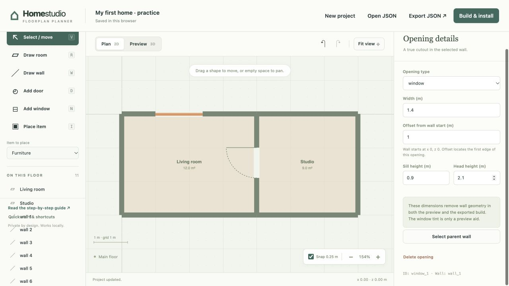
Check: the top Living room wall has one window. Its head height is 2.1, not 1.2; that field measures the top edge from the floor.
STEP 05 · SOMETHING TO GIVE THE ROOM SCALE
Put a table in the studio
The Item library includes 195 designs: furniture, rugs and tapestries, mirrors, lighting, plants, life-size display bears, electronics, toys, vehicles, sports gear, and outdoor accessories. Search by name or browse a category, then choose a design. Each has a starting size you can adjust to match your home. Search looks through the entire library; Show more adds another 24 cards.
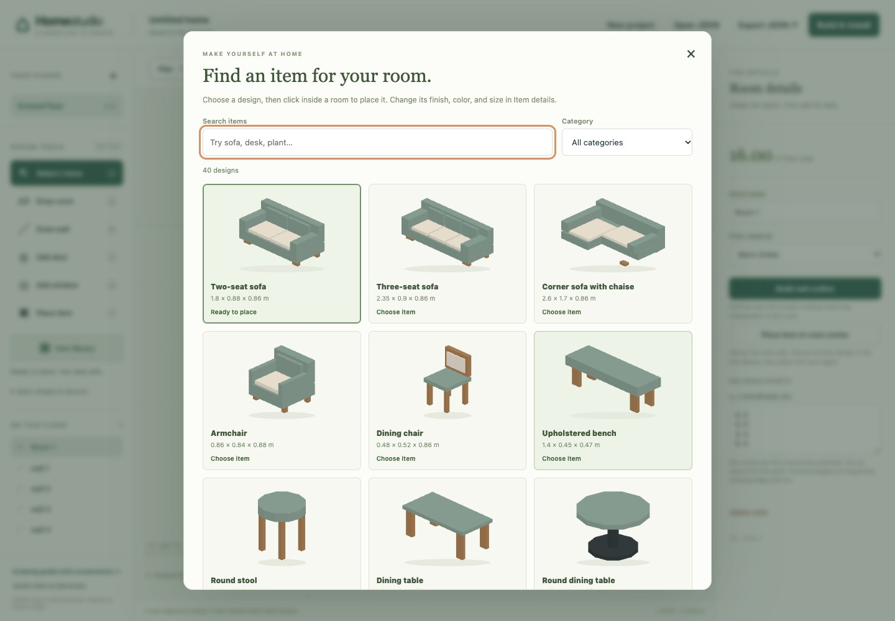
- In the left panel, open Item library. Search for desk and choose a desk design. The library closes and the selected item is ready to place.
- Select Studio from On this floor. This selects the room without accidentally placing an item.
- On the right, click Place item at room center.
- In Item details, set Item name to Studio table. Choose a Color palette, or use Custom body color to pick a color. Under Size & rotation, enter the size below. Press Tab after each edit.
- Width (m)
- 1.4
- Depth (m)
- 0.7
- Height (m)
- 0.75
- Rotation (degrees)
- 0
Its position should be x 5.5, y 0, z 1.5. The x and z values locate the center of the item on the plan. The y value locates its bottom above the floor, so leave y at 0. Leave Entity ID (optional) blank: a table needs no device connection.
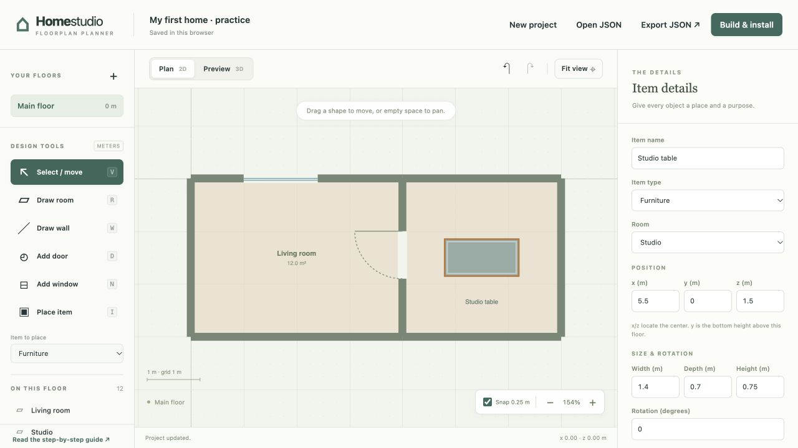
Check: one item named Studio table is assigned to Studio. It is centered in the room, and its top is 0.75 meters above the floor.
For free placement later, choose Place item and click inside a room. The same design stays ready for repeated placement. Choose Select / move to drag it afterward, or type an exact position in Item details. Changing Design keeps your custom size and position; Use design’s original size restores its starting dimensions. Choose from 18 coordinated color palettes or a custom body color. Color and pattern changes support Undo and stay with your JSON export.
Try a garage, a music corner, or a workshop
Search for Tesla, café racer, bicycle, skis, server, teddy, or guitar. To put a small object on a desk, set its y position to the desk height. For example, a printer on a 0.75-meter desk starts at y 0.75.
Download the fictional garage and creative studio JSON, save your own drawing with Export JSON, then open the example with Open JSON. It contains 21 editable objects and no device bindings.
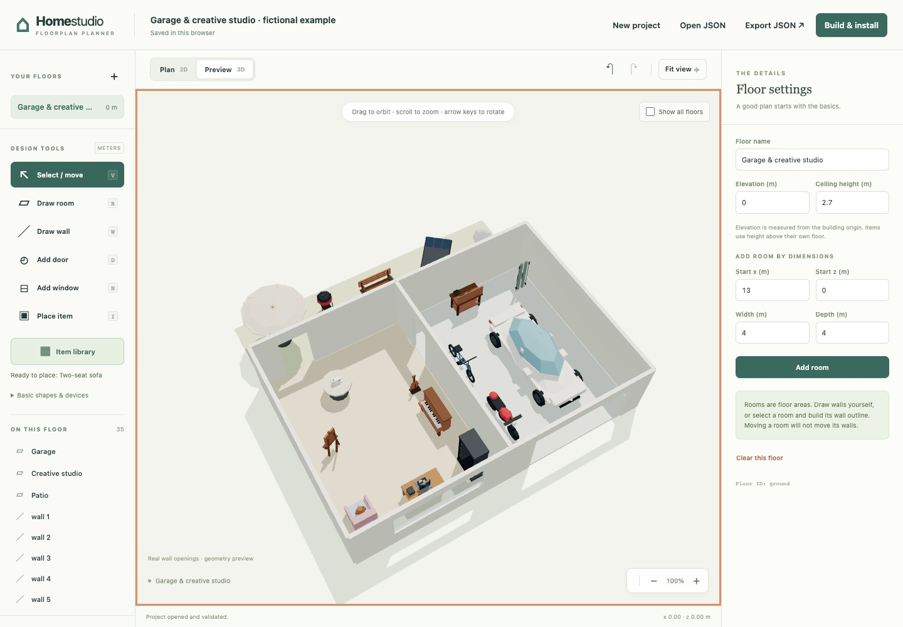
Dress the room: rugs, wall hangings, lights, and plants
Search for a familiar word such as rug, tapestry, mirror, star, sconce, ficus, cactus, or bear. Use the Category menu to narrow the choices. The life-size display bears are separate from the small teddy bear.
- On the floor: place a floor rug, plant, floor lamp, or bear inside the room. Its bottom starts at y 0. Rugs stay below taller furniture even when you add them last.
- On a wall: choose a wall rug, tapestry, mirror, or sconce. These designs already stand upright. Move the item next to the wall and use Rotation to face it into the room: start with 0, 90, 180, or 270 degrees. Keep the decorated front clear of the wall.
- At the right height: y is the height of the item's bottom. A 1-meter mirror at y 1 reaches 2 meters. Changing its height does not move its bottom.
- Near the ceiling: choose a chandelier or bulb. For a 0.6-meter fixture under a 2.7-meter ceiling, set y to 2.1. The top is y plus Height. Check it in Preview 3D before exporting.
- Make it yours: choose a Color palette for coordinated colors, or Custom body color for its main surface. Use design’s original size restores the suggested dimensions; measure your own object for a close fit.
Download the fictional decorated studio, save your current drawing, then use Open JSON. Try moving its wall hanging, changing its rug color, or lowering its chandelier.
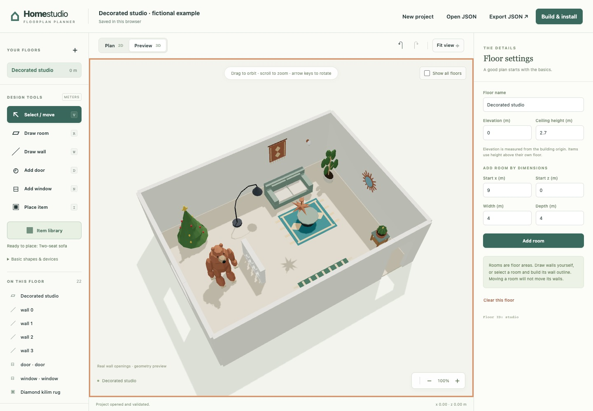
Choose a palette and a fabric pattern
A Design is the shape, a Color palette is a coordinated set of colors, and a Surface pattern is a drawing on the fabric. You can change them independently, like choosing a chair, its upholstery, and its fabric print.
- Open the Item library and search for cushion, rug, curtain, throw, or ottoman. Place the design inside a room and select it.
- In Item details, choose a Color palette. The four-color strip shows its main, accent, wood, and metal colors. Try Sage and linen, Desert clay, or Plum velvet. The small item preview updates immediately.
- Choose a Surface pattern: Stripes, Checks, Diamonds, Dots, Herringbone, or Chevrons. This control appears only when the design has a suitable fabric or decorative panel.
- Use Custom body color for the base and Pattern color for the drawing. Pick contrasting colors if the drawing looks faint. Use palette pattern color restores the coordinated accent.
- Select None to restore the original surface. Changing Color palette resets custom colors while keeping the chosen pattern. Use Undo if you prefer the previous look.
- Open Preview 3D, then Export JSON to keep the editable version. Rebuild and reinstall after changing a design, palette, or pattern to update your Home Assistant plan.
Patterns cover designated flat panels; they do not wrap around every curved shape. Choose the separate open or closed curtain design for the look you need: these are static furnishings, not live curtain controls. For a cushion on a 0.48-meter seat, set its bottom height y to 0.48.
Download the fictional color and pattern studio. Save your own drawing first, then Open JSON to compare all six patterns in one room. Everything remains editable.
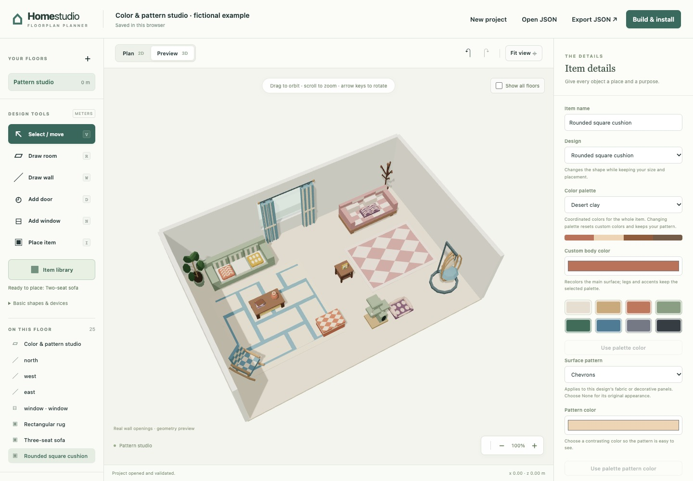
Your older projects still open with their original basic shapes. Select an item and choose a Design to give it a new appearance, or open Basic shapes & devices in the left panel to place a simple block, switch, outlet, or sensor.
STEP 06 · SEE IT STAND UP
Look around in 3D
- Click Preview 3D above the drawing.
- Drag across the view to turn the home around; drag up or down to change the tilt and see inside. Scroll to move closer or farther away. You can also click the view and use the arrow keys to turn, and + / − to zoom. Press the up arrow a few times for a higher viewpoint like the picture.
- Click Fit view if the home moves out of a useful view. Rotate until you can see the doorway and the window from inside.
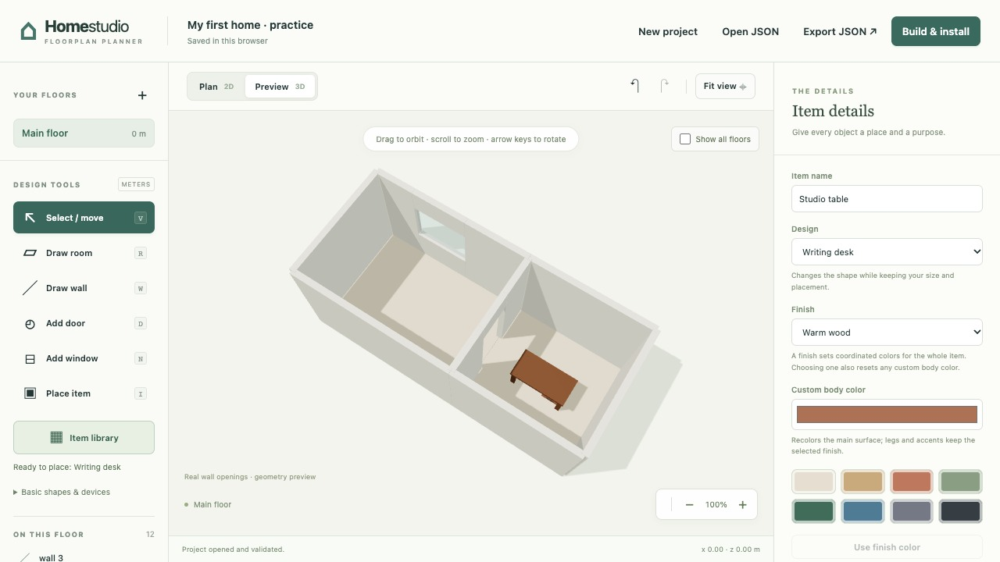
Check: walls stand 2.7 meters high; the door reaches the floor; the window leaves wall beneath it; the table rests on the Studio floor.
To change a measurement, return to Plan 2D, select the object in On this floor, and edit its details. Then return to Preview 3D to see the result.
STEP 07 · KEEP A COPY YOU CAN REOPEN
Save your work, then try reopening it
The planner keeps a local draft in this browser. A downloaded JSON project is your portable, editable copy: it lets you move computers, keep versions and recover if browser storage is cleared. It is a drawing file, not a published website or an installed Home Assistant dashboard.
- Click Export JSON at the top. Your browser downloads a file called project.json (or a numbered copy if that name is already used).
- Find the file in your browser's downloads. Keep it somewhere you can find again; you can rename it two-room-study.json. JSON is simply the planner's editable project format.
- Click Open JSON and choose the file you just saved. If asked to replace the current draft, confirm after checking that you have selected the right file.
- Check both rooms, the door, the window and the table. Open Preview 3D once more.
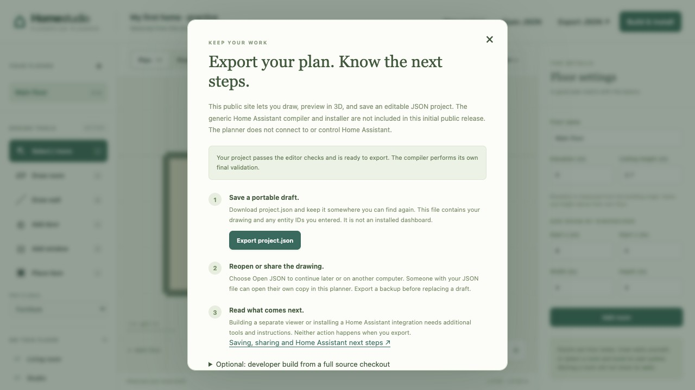
Finished: your downloaded file reopens as two rooms, seven walls, two openings and one item, and the 3D preview matches your drawing.
A QUICK WAY BACK ON TRACK
If something looks wrong
I cannot find Floor settings or the object I want
Click the floor name under Your floors to clear the selection. To select a small or hidden object, use On this floor instead of the drawing. The right panel always follows your current selection.
Before clicking the plan to select something, choose Select / move. Add door, Add window and Place item create things when you click.
A typed value did not seem to change anything
Press Tab or click out of the field to apply the change. The panel refreshes after an edit, so click the next field if necessary. Read the message at the bottom of the planner: an invalid change is rejected and the previous valid value is kept.
Use meters and a decimal point, such as 0.9. An opening must fit inside its wall, its head must be above its sill, and an item's top must stay below the ceiling.
There is a gap, an overlap, or a wall in the wrong place
For this lesson, check Studio starts at x 4, z 0. Rooms may meet along an edge, but their floor areas cannot overlap. Changing a room does not move its walls or openings.
Use Undo to step back. Deleting a wall also deletes its openings. Deleting a room removes its assigned items, but leaves the walls; inspect the list before redrawing.
The drawing or 3D view is hard to see
Click Fit view. In Plan 2D, scroll to zoom, or hold Space / Shift while dragging to move the view. In Preview 3D, drag to turn the home rather than to move its objects.
If Preview 3D reports a graphics error, try a browser with WebGL and hardware acceleration enabled. Keep an exported JSON copy before changing browsers. The guide works on a phone, but drawing is easier on a larger screen with a mouse or trackpad.
The planner is blank, or my draft seems missing
Use Start drawing ↗ to open the hosted planner. You do not need to install software or start a local server.
Use the same browser profile and website each time. A private window or a different device has a separate draft. Pages on the same website origin can share browser storage. If the local draft is missing, use Open JSON to restore your exported copy. An autosave error means you should export before leaving the page.
If the planner stays blank, reload the page in a current browser with JavaScript enabled. Keep an exported copy before clearing any browser data.
Optional: run a downloaded copy locally
The complete toolkit download includes this planner, its compiler and the Home Assistant installer. Keep the extracted folders together. To open the planner locally, open a terminal in the extracted toolkit folder and, if Python 3 is installed, run:
python3 -m http.server 8099 --bind 127.0.0.1Then open http://127.0.0.1:8099/planner/ ↗. Keep the terminal running. Double-clicking index.html is not supported. The hosted planner needs none of these steps.
Localhost, 127.0.0.1 and the hosted site have separate browser storage. Export JSON before switching addresses, then use Open JSON in the other copy. Opening the planner does not run the compiler or install anything in Home Assistant. When your drawing is ready, follow Build and install your home.